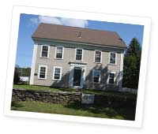
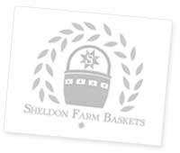

Sheldon Farm Baskets are all handmade from the highest quality of reed and produced locally in Barre, Massachusetts.
We offer handpainted baskets as well as baskets with dyed reed. The baskets come in a variety of shapes and sizes and may be custom designed to include a painting or design of your choice. Whether you're looking for a gift basket, a wine basket, or a basket to hang on the wall, there is a style for everyone!
Sheldon Farm is set on an idyllic 75 acres with a pond, evergreen tree orchard, peach orchard and acres of raspberries. We are located in Barre, the heart of Central Massachusetts. For twenty years, Sheldon Farm Baskets have been sold at hundreds of craft fairs in Central Massachusetts area. Now retired, Sue expanded her business online with the hopes of sharing her craft with an even wider audience of individuals.
Sue Morello is a retired teacher from the Spencer/East Brookfield School System where she taught third grade for 35 years. She first learned to make baskets more than two decades ago from a basket weaver in a neighboring town and has continued the tradition ever since. Her passion for basket weaving has led to an ever increasing selection of handmade basket designs. In addition to selling her baskets at many local craft fairs, Sue has taught hundreds of others how to weave their own. She hopes that you enjoy your visit to the site and welcomes any questions or comments that you may have.
10/10/2010
Sheldon Farm Baskets website published in the web design index 9!
12/10/2009
NEW Sheldon Farm Business Cards. Click here to check them out
12/10/2009
Site updated with new Flash Banner. Check here for all our upcoming news
11/25/2009
New Baskets added to our shop
11/06/2009
Check us out on our NEW Picassa photo gallery
11/04/2009
SheldonFarmBaskets.com Web Design Featured on several design galleries
11/2/2009
SheldonFarmBaskets.com LAUNCHED
10/15/2009
SheldonFarmBaskets.com set to launch November 5th, 2009.
{kind=link}